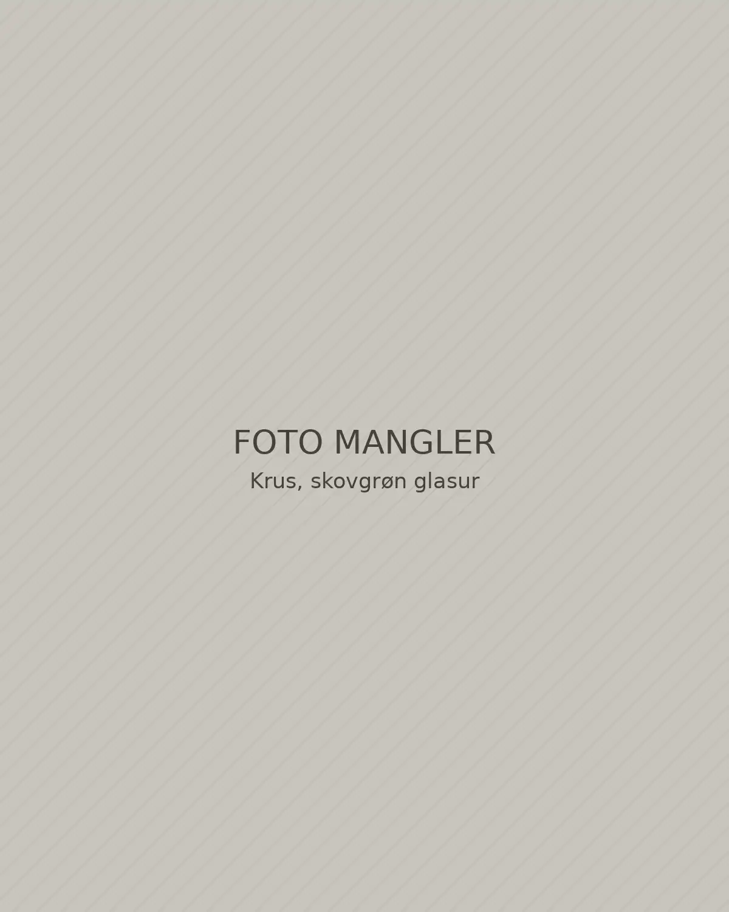

245 kr.
Ler. Glasur. Hverdagsritualer.
Stentøj med ro i formen
og plads til livet omkring.
Fra vores værksted i Odder
En kop, der ligger godt i hånden. En skål, der bliver sendt rundt. Hos Lerværk er idéen enkel: få, gennemtænkte former, du får lyst til at bruge igen og igen.
Læs om vores tilgangDen lille samling / 01–08
Otte former. Tre rolige glasurer.
Skabt til at finde sammen på dit bord.
245 kr.

fra 165 kr.

fra 225 kr.

545 kr.

235 kr.

295 kr.
 Udsolgt
Udsolgt
595 kr.

495 kr.
Skabt i små serier. Brug delene hver for sig, eller lad dem finde sammen på bordet.
Vores tilgang
Et lille værksted, hvor materialet får lov at være hovedpersonen.

01 — Fra jord til bord
Vi arbejder med rødbrændende stentøj. Vi drejer og former delene i små serier, før de tørres, brændes og får glasur.
På kanten og ved foden møder den glatte overflade det rå ler. De små skift i farve og struktur er en del af objektet — også når det står sammen med resten af serien.
Formen
Enkle linjer, plads til hånden.
Overfladen
Tre glasurer, samme varme ler.
Hverdagen
Lavet til at blive brugt.
Farver fra det nære
Hold bordet i én tone, eller bland det lyse med det dybe. Alle tre glasurer møder samme varme stentøj.
Godt at vide
Gode ting skal være rare at få hjem og lette at passe på. Her finder du svar på de små, praktiske spørgsmål.
Fragt til pakkeshop koster 49 kr. og er gratis ved varekøb fra 800 kr. Du kan også vælge gratis afhentning på værkstedet i Odder efter aftale. Vi pakker og sender inden for 2–3 hverdage. Vilkårene er eksempler i denne demo.
Kollektionens produkter tåler opvaskemaskine. Krus og skåle kan bruges i mikroovn, hvor det fremgår af produktsiden. Undgå store, pludselige temperaturskift, og lad keramik køle ned før koldt vand.
Små variationer i mål og glasur hører håndformet keramik til. Glasuren kan samle sig dybere ved en kant og stå lettere på en kurve. Det giver hver del sin egen karakter.
Ingen varer sælges på siden, så der opstår intet køb, ingen levering og ingen retur. Du kan prøve kurven og afslutte en demobestilling uden betaling. Oplysninger bliver i din browser og sendes ikke.